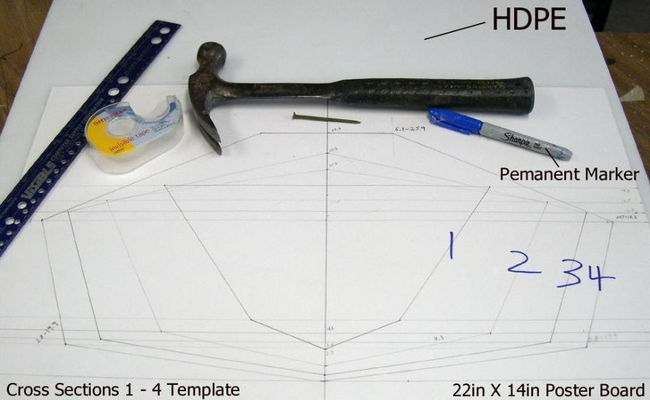

| HDPE Cross Sections | Menu Previous Page Next Page |
|  | |
| Marking Offset points on HDPE - Tape the template to a section of 1/2" HDPE. Using a hammer and nail, mark the keel, chine, gunwale, and deckridge offset points for one of the cross sections. Remove the template to expose the marks in the HDPE. Use a permanent marker to highlight the nail holes in the HDPE. | |